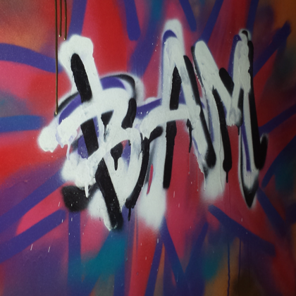
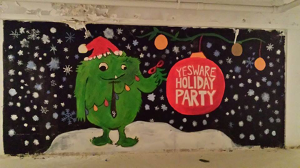
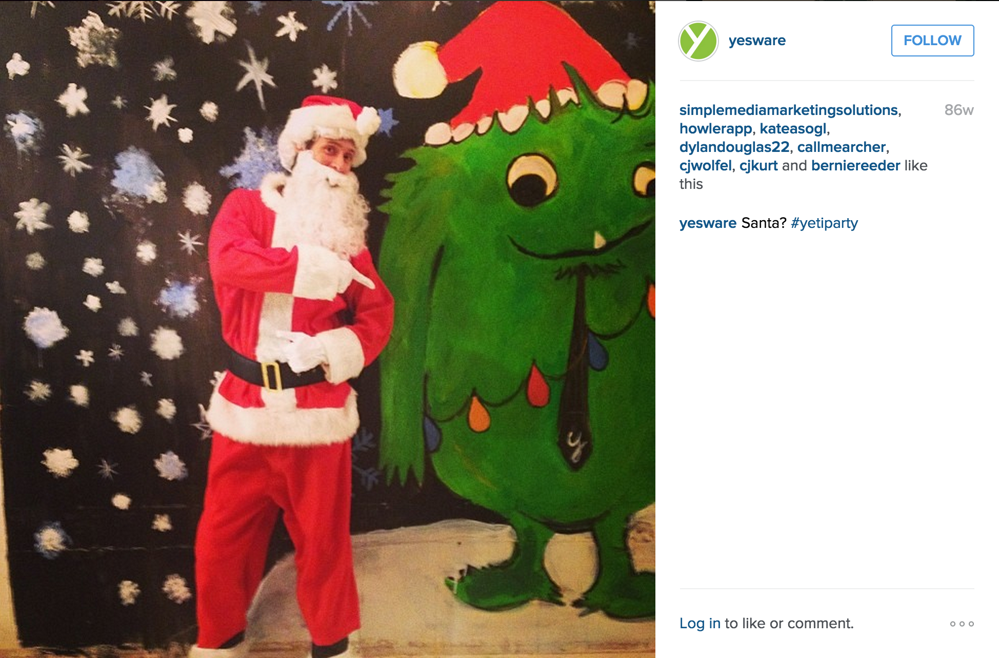

Hello again!
It's still me, Christine.
Currently
Making salespeople and their managers happy as a Product Designer at Yesware
Based In
Boston: home to the Red Sox, record-setting blizzards, and the people who make lemonade out of record-setting blizzards
Aka
That girl who's always trying to put googly eyes on everything, inanimate objects included
My journey into design is a funny one. I had always wished to get into a creative profession but never thought I had the right credentials to do so. Even with an Archiecture major in my hand, I didn't think I was qualified enough to be a full-time designer without further education in something called "full-time designer". Call it a symptom
Fast forward to January 2014 when my boss took me on a strategic cookie walk and planted this idea of being a designer into my head. He invited me to a sketch session for what would be one of our biggest features and assured me that I had relevant experience working with our customers and would be able to bring a unique perspective to the table.
When I started to think about design this way, I began to participate more in the Design discussions and even started taking on some side projects. Since our Design resources were understaffed, people began to ask me to take on some more responsibilities and I never said no. I didn’t mind working the extra hours after my "real job" since creating new expreiences and iderating on these ideas fulfilled my creative itch. Having found success with these side projects and thoroughly enjoying this process, I decided to tackle on design full-time, thus becoming the Accidental Designer.
Now
Happily working as a Product Designer at Yesware
2014
After taking on all these side projects and having success with them, I’ve become the accidental designer.
March 2014
That one time my colleagues and I pretended to be graffiti artists and spray painted our office’s bathroom stalls… (with permission from the powers that be, of course!)
February 2014
Design resources are low and that seed that my boss planted is growing, so I take on some side projects to play pretend designer.
January 2014
Boss takes me on a strategic cookie walk and plants the idea of being a designer into my head.
December 2013
That other time that my joking comment ended up being taken seriously… Long story short, my colleagues and I painted a huge mural for our holiday party. Yeah, Santa was a fan.
 June 2014
Luckily landed my first "real job" in the "real world" as a Customer Confidence Advocate at Yesware. This was where I learned about our users and advocated on their behalf for their issues and pain points. Talking to users everyday and learning how they used the product was incredibly eye-opening and a great primer to empathy-driven design.
2002
Published my first Geocities site! Complete with a counter, a trailing banana cursor and of course, sensible word art. We all remember these days, right?
2000
First foray into HTML and Flash in Computer Lab. We made fun games and stuff.